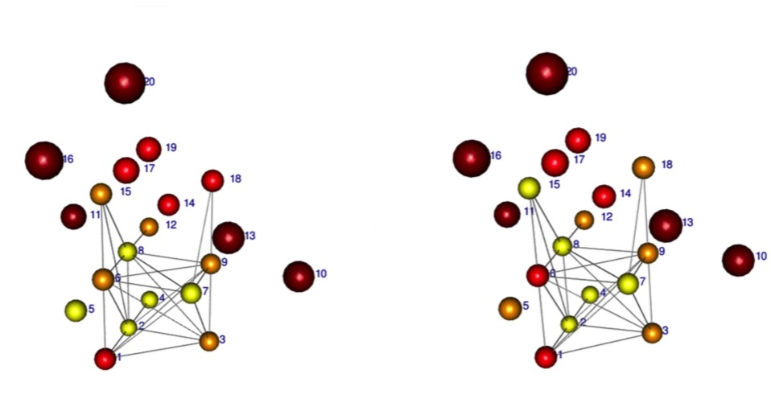
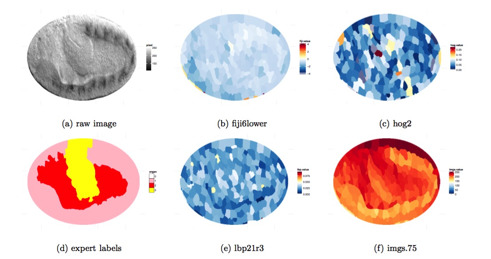
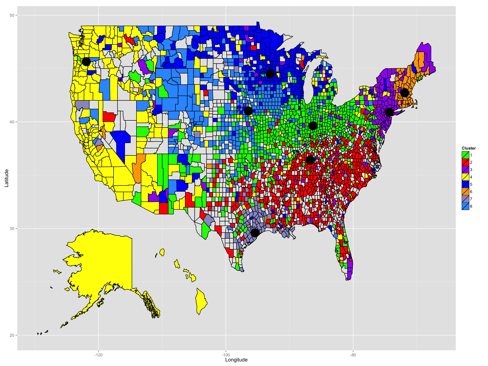

Project
Predict the Responses to Visual Images on fMRI data

In this project, we are focusing on the responses in 20 voxels located in the region of the brain responsible for visual functions. We have 120 observations and each with 10921 features (wavelets). We first use Sure Independence Screening for dimension reduction. Then we use Lasso , L2-boosting , Random Forest , Tree Boosting to predict the responds. We also use Knockoff filter to find the significant coefficients while controling the false discover rate.
|
Organ Classification for Drosophila Embryo Image based on Machine Learning Method

This project mainly focuses on distinguish gut, yolk, and epidermal/mesodermal tissue in embryo images. We construct features from the raw embryo image based on computer vision method (e.g. Histogram oriented gradient feature and Local Binary Pattern) using scikit-image in python, select features based on variable importance from Random Forest and Tree Boosting. We then apply different machine learning algorithms (Random Forest, Tree boosting, Lasso, SVM) to classify the organ.
|
Unsupervised Learning for Dialectometric Analysis

In this project, we apply unspervised learning to the dialectometric analysis of the Harvard Dialect Survey conducted in 2003.
We use Multidimensional Scaling (MDS) to visualize the relationship of the questions. Based on Term Frequency-Inverse Document Frequency (TF-IDF) model, we propose a new distance metric and use k-medoids model to find out the sub-culture in America.
|